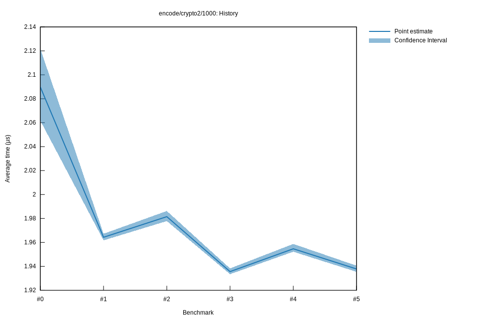

# 52022-10-16T20:05:27+03:00
|
Lower Bound |
Estimate |
Upper Bound |
| Value: |
1.94µs |
1.94µs |
1.94µs |
| Throughput: |
493.74MiB/s |
493.13MiB/s |
492.42MiB/s |
| Change in Value: |
-0.9408% |
-0.7601% |
-0.5660% |
| Change in Throughput: |
+0.9498% |
+0.7659% |
+0.5692% |
No change in performance detected.
# 42022-10-16T17:24:56+03:00
|
Lower Bound |
Estimate |
Upper Bound |
| Value: |
1.95µs |
1.95µs |
1.96µs |
| Throughput: |
489.48MiB/s |
488.87MiB/s |
487.86MiB/s |
| Change in Value: |
-0.2871% |
+0.2668% |
+0.7209% |
| Change in Throughput: |
+0.2879% |
-0.2661% |
-0.7157% |
Change within noise threshold.
# 32022-10-15T17:16:01+03:00
|
Lower Bound |
Estimate |
Upper Bound |
| Value: |
1.93µs |
1.94µs |
1.94µs |
| Throughput: |
494.23MiB/s |
493.68MiB/s |
493.00MiB/s |
| Change in Value: |
-2.0663% |
-1.5864% |
-1.0437% |
| Change in Throughput: |
+2.1099% |
+1.6120% |
+1.0547% |
No change in performance detected.
# 22022-10-15T16:50:39+03:00
|
Lower Bound |
Estimate |
Upper Bound |
| Value: |
1.98µs |
1.98µs |
1.99µs |
| Throughput: |
483.15MiB/s |
482.25MiB/s |
481.10MiB/s |
| Change in Value: |
+0.6382% |
+0.8601% |
+1.0861% |
| Change in Throughput: |
-0.6341% |
-0.8527% |
-1.0744% |
No change in performance detected.
# 12022-10-08T17:27:24+03:00
|
Lower Bound |
Estimate |
Upper Bound |
| Value: |
1.96µs |
1.96µs |
1.97µs |
| Throughput: |
487.12MiB/s |
486.48MiB/s |
485.75MiB/s |
| Change in Value: |
-6.2290% |
-5.1185% |
-4.0921% |
| Change in Throughput: |
+6.6428% |
+5.3947% |
+4.2667% |
No change in performance detected.
# 02022-10-08T17:08:19+03:00
|
Lower Bound |
Estimate |
Upper Bound |
| Value: |
2.06µs |
2.09µs |
2.12µs |
| Throughput: |
463.48MiB/s |
457.25MiB/s |
450.38MiB/s |